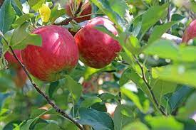

Organic Vegetables Farming

Present day agricultural practices are posing a serious threat to the human population due to unscrupulous use of chemical fertilizers and pesticides. Conventional agricultural practices wherein large quantities and unscrupulous use of chemical fertilizers and pesticides are no longer safer as it directly enter the food chain. Hence, organic cultivation of vegetables is gaining momentum among the growing population. Organic practices rely on crop rotations, crop residues, plant and animal manures, growing of legume and green manure crops and biological control of pests and diseases. It aims to combine tradition, innovation and science in a balanced proportion to utilize the environment in safer manner and maintain ecological balance.
Organic Meat Farming
When you eat meat, choosing organic is especially important, because meat production can have cascading effects on human health, animal welfare, and the environment. There is a long chain of resources that support the animals used for meat production. Choosing organic at the grocery store has an added value when it comes to supporting sustainable production, because you are not only ensuring that the animals are raised without synthetic chemicals and have high welfare standards, but also that all the food that animals eat comes from organic sources that support soil health and biodiversity.
Organic Fruits Farming
The worldwide market for organic food items has been developing essentially since the most recent decade. Organic food products have become most popular in public. The farming of organic product is a novel practice which adjusts the ecological sustainability and furthermore controls the inconvenient impact both on customer’s safety by making a positive thought in the minds of the customers. This literature review is developed by using the secondary data collected from various research papers from SSRN and the internet. The purpose of this paper to examine the current status of organic farming, the Advantages, and Disadvantages of Organic Food Products. In addition, discussed to the Organic Fertilizer and Chemical Fertilize